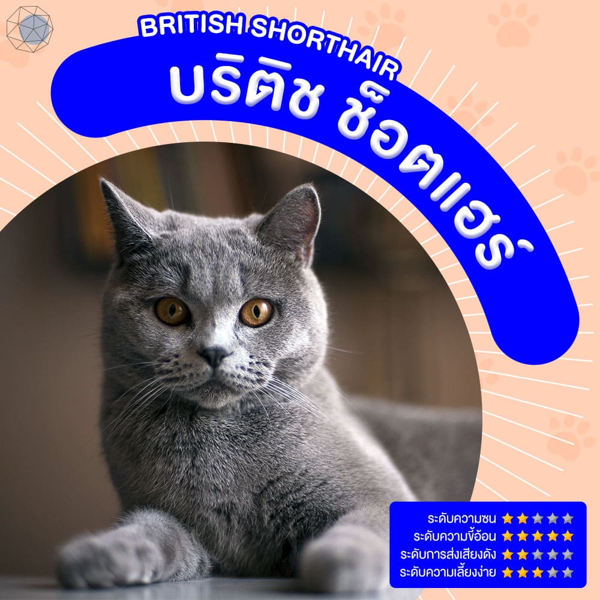
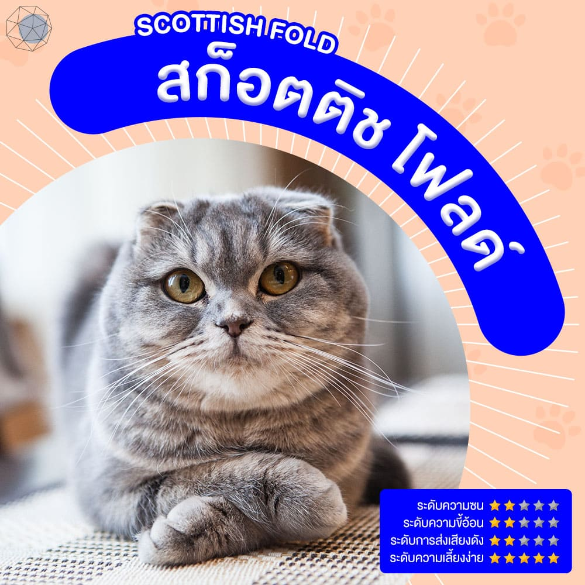
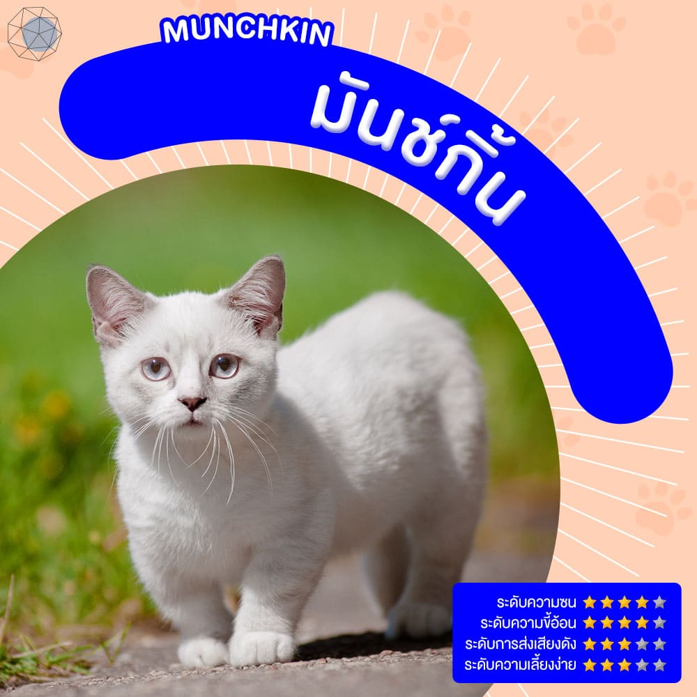
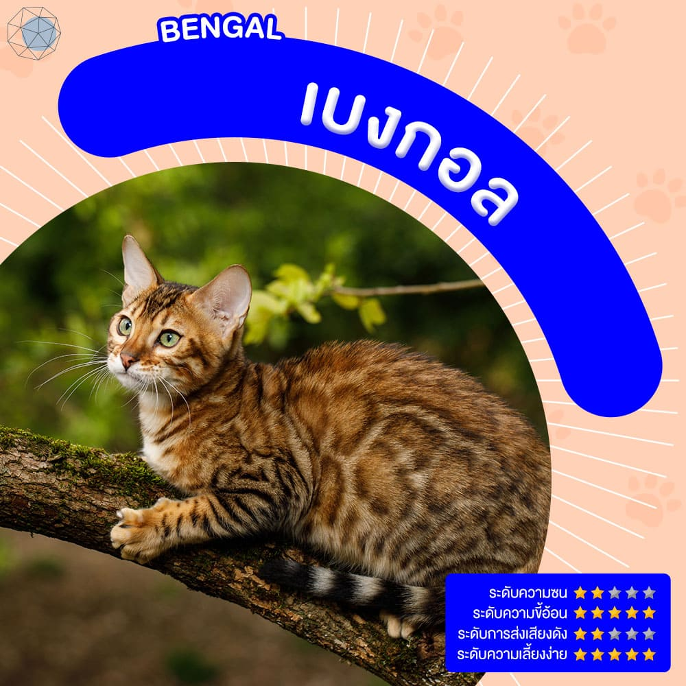
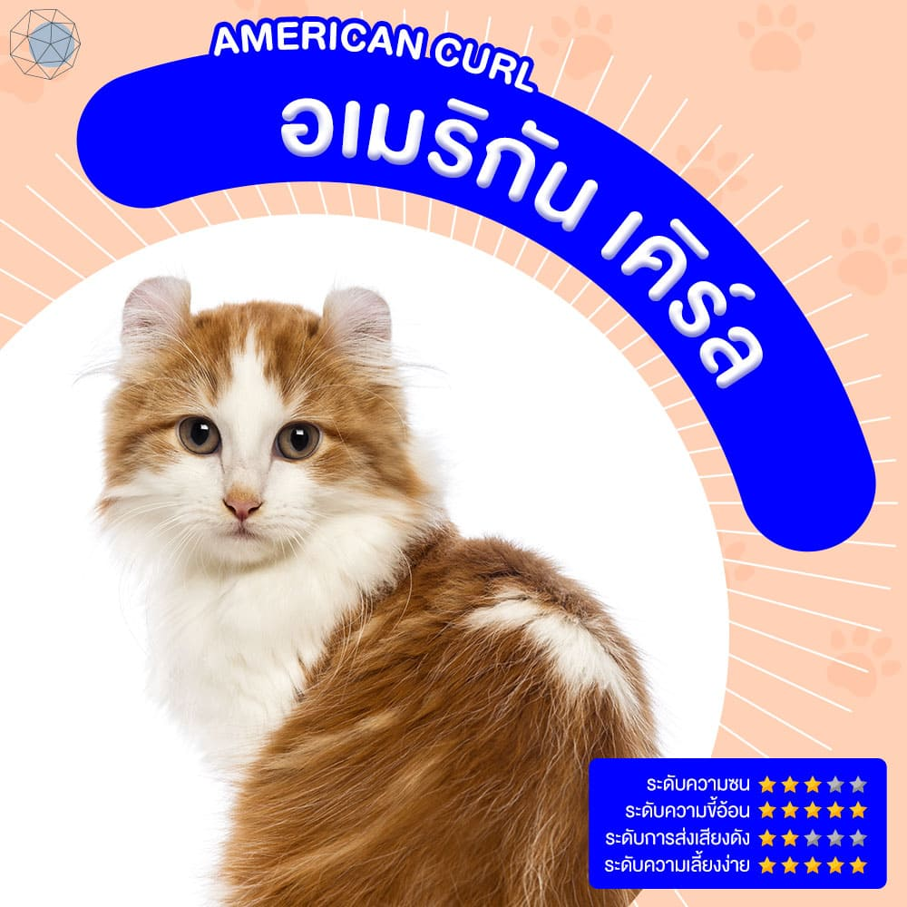
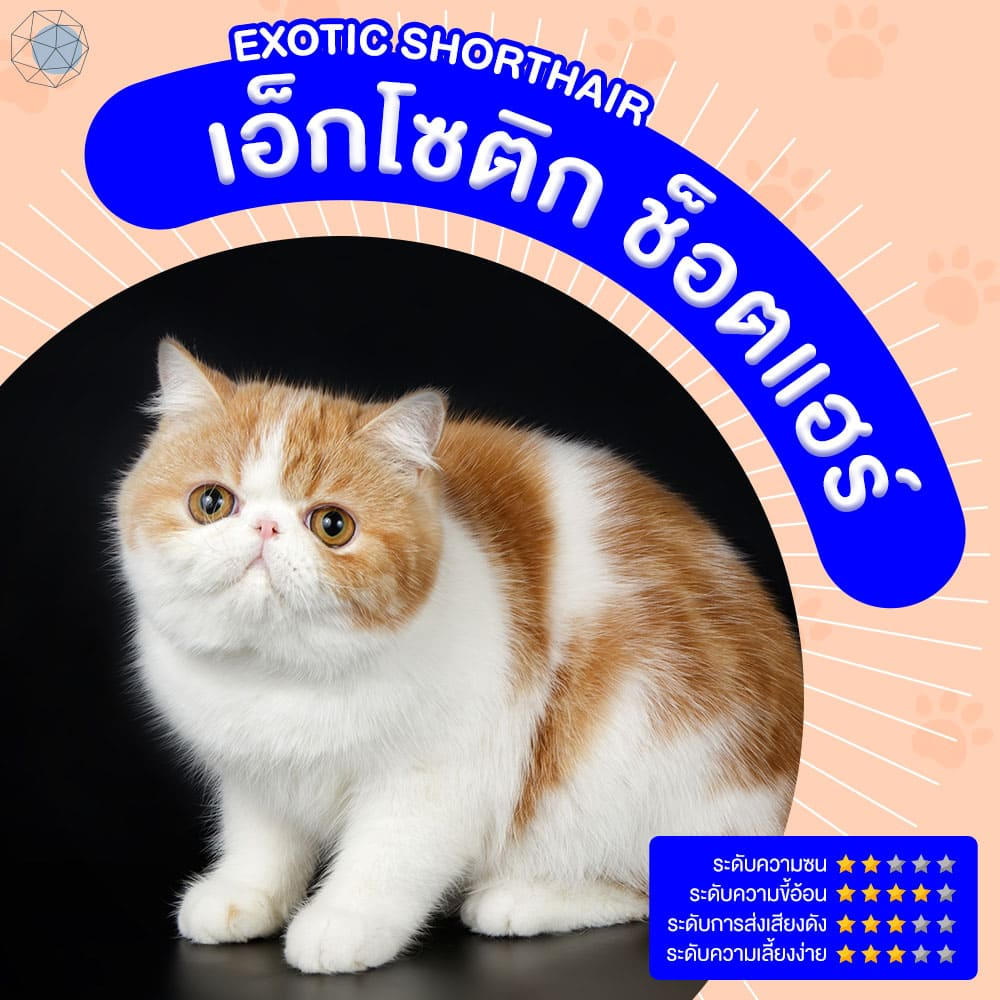
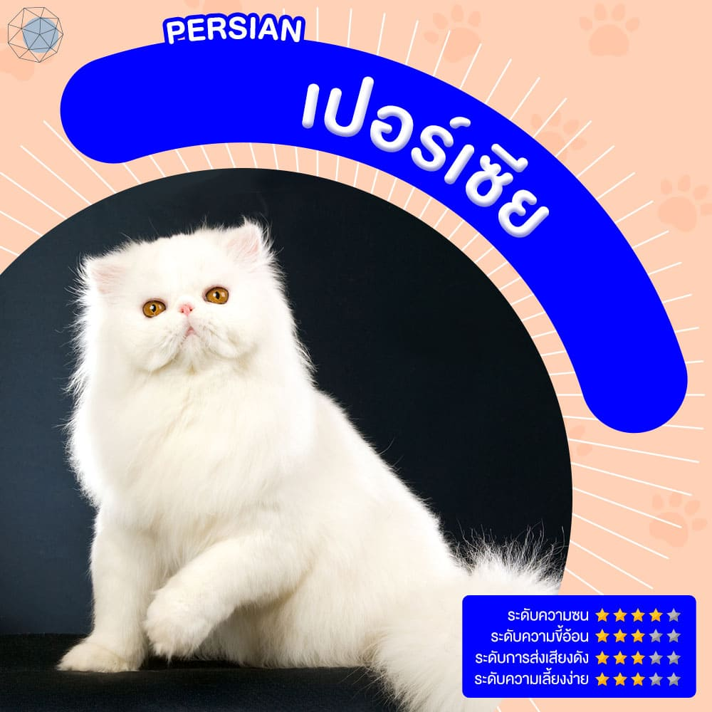
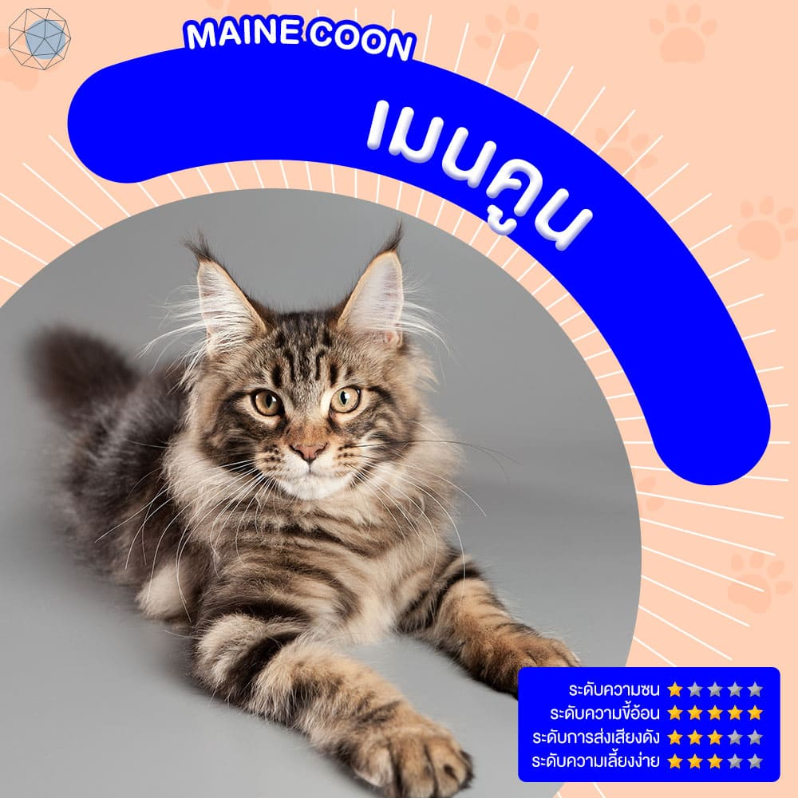
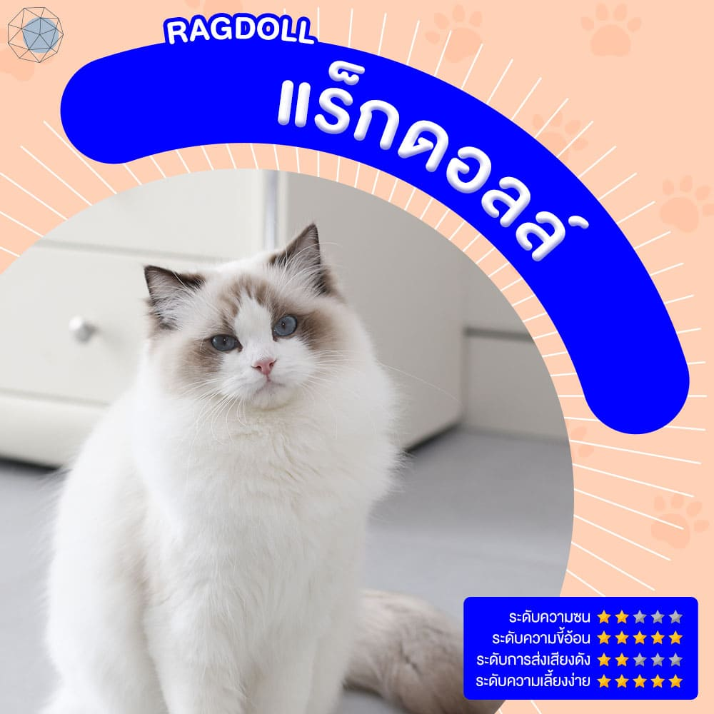

10 สายพันธุ์แมวน่าเลี้ยงที่สุดทำทาสหลงรักหัวปักหัวปำ
1. อเมริกัน ช็อตแฮร์ (American Short Hair)
อเมริกัน ช็อตแฮร์เป็นสายพันธุ์แมวที่ฮอตฮิตมาก เพราะมีลวดลายที่สวยงามแปลกตา เป็นแมวที่มีหน้าตาน่ารัก และรูปร่างก็น่าฟัดน่ากอด ค่อนข้างเลี้ยงง่าย เพราะน้องสามารถเล่นได้ด้วยตัวเอง จึงไม่ค่อยอ้อนคนมากนัก เหมาะกับทาสที่ชอบเอาชนะใจแมวหรืออยากให้แมวมาสนใจอย่างยิ่ง เนื่องจากน้องมีโลกส่วนตัวค่อนข้างสูง

2. บริติช ช็อตแฮร์ (British Shorthair)
บริติช ช็อตแฮร์เป็นสายพันธุ์แมวที่ค่อนข้างเงียบ ไม่ค่อยส่งเสียงร้อง สามารถเลี้ยงในคอนโดได้ แต่ที่อยากนำเสนอเป็นพิเศษคือน้องเป็นพันธุ์แมวที่น่ารักและขี้อ้อนมาก ๆ แถมใบหน้ายังกลมใหญ่ดูเป็นไอ้ต้าวอ้วน แต่จริง ๆ แล้วสายพันธุ์ของน้องเป็นสายพันธุ์แมวที่แข็งแรง มีกล้ามเนื้อเยอะเฉย ๆ โดยส่วนใหญ่สีที่คนนิยมเลี้ยงจะเป็นสีเทาหรือสีสวาด แต่คนในวงการแมวจะเรียกว่าสีบลู

3. สก็อตติช โฟลด์ (Scottish Fold)
หากพูดถึงสายพันธุ์แมวที่เป็นขวัญใจของสาว ๆ ต้องยกให้สก็อตติช โฟลด์เขาเลยล่ะ เรียกได้ว่าเป็นแมวที่น่าทะนุถนอมสุด ๆ เพราะขนาดของนางนั้นมินิเหลือเกิน แถมหน้าตายังบ้องแบ๊วชวนหลงใหล และยังชอบวิ่งสุด ๆ แต่บทจะเงียบก็เงียบจริง ๆ และบอกไว้ก่อนว่าน้องจะอ้อนแค่ตอนหิวเท่านั้น *แมวพันธุ์นี้ไม่ควรนำแมวที่มีหูพับมาผสมกับแมวหูพับเหมือนกัน เพราะลักษณะของหูพับเป็นยีนเด่นที่กลายพันธุ์ เมื่อผสมพันธุ์ไปแล้วลูกแมวที่เกิดมามีโอกาสที่จะไม่สมบูรณ์ ควรผสมกับแมวหูตั้งเท่านั้น เช่น พันธุ์บริทิช ช็อตแฮร์ (British Shorthair) หรือผสมกับพันธุ์อเมริกัน ช็อตแฮร์ (American Shorthair) ก็ได้

4. มันช์กิ้น (Munchkin)
นี่ก็เป็นอีกหนึ่งสายพันธุ์แมวที่น่ารักไม่เบา ใคร ๆ มักเรียกน้องว่า “เจ้าเตี้ย” เพราะน้องขาสั้นถึงขั้นพุงติดพื้นเลยทีเดียว แต่เห็นแบบนี้จังหวะยืนสองขาก็ทำเอาเหล่าทาสใจละลายเหมือนกัน และยังขี้อ้อนสุด ๆ เดินไปไหนก็ตามตลอด แถมยังซนเอามาก ๆ

5. เบงกอล (Bengal)
ใครที่หลงใหลในความน่ารักของลูกเสือ ต้องมีเจ้าเบงกอลไปเลี้ยงสักตัวแล้วล่ะ เพราะลวดลายของน้องนั้นเหมือนเสือจากัวร์มาก เนื่องจากเป็นแมวที่ผสมข้ามสายพันธุ์ระหว่างแมวดาวกับแมวบ้าน แต่ถ้าใครกังวลเรื่องความดุร้ายนั้นไม่ต้องห่วง เพราะน้องเชื่องและเป็นมิตรกับคนมาก ๆ แถมยังฉลาด คล่องแคล่วปราดเปรียว วิ่งเก่ง พลังนี่ล้นเหลือ และยังชอบเล่นน้ำเป็นที่สุด คงจะเป็นสัญชาตญาณของแมวดาวแน่ ๆ *แมวเบงกอลต้องเน้นเรื่องอาหารเป็นพิเศษ ควรให้กินอาหารเปียกที่มีเนื้อสัตว์เป็นส่วนประกอบ อาจจะเพิ่มเนื้อวัวสดได้เล็กน้อย แต่ห้ามให้กินเนื้อหมูหรือไก่สดเด็ดขาด! น้องอาจท้องเสียได้ *เคล็ดลับ: ควรเล่นกับเขาบ่อย ๆ เกาคอ พาแช่น้ำ แปรงขน หรือเรียกให้มาหา จะช่วยกระตุ้นให้น้องแมวเบงกอลอารมณ์ดี

6. อเมริกัน เคิร์ล (American Curl)
อเมริกัน เคิร์ล เป็นสายพันธุ์แมวที่มีลักษณะโดดเด่นให้เห็นชัด นั่นก็คือหูจะพับไปด้านหลัง มีความเป็นแมวผู้ดี ทรวดทรงองเอวสวยงาม ชอบเล่นกับคน มีความขี้อ้อน ชอบอยู่ข้าง ๆ มนุษย์ แต่ไม่ชอบให้อุ้ม แถมยังชอบปีนป่ายและกระโดดไปมาอีกด้วย *เจ้าของต้องมีเวลาดูแลเอาใส่ใจ เนื่องจากแมวสายพันธุ์นี้ไม่ชอบการถูกละเลยจากครอบครัว

7. เอ็กโซติก ช็อตแฮร์ (Exotic Shorthair)
เอ็กโซติก ช็อตแฮร์ เป็นสายพันธุ์แมวที่ค่อนข้างเป็นมิตรกับทุกคน ชอบคลอเคลีย และยังได้รับฉายาว่าเป็นแมวหน้ามึนอีกด้วย แถมตัวอ้วนกลมน่ากอดมาก ๆ ช่างสงสัยเป็นที่หนึ่งเลยล่ะ ใครที่คิดจะเลี้ยงแมวพันธุ์นี้อาจจะต้องดูแลตาน้องเป็นพิเศษ เพราะน้ำตาจะไหลค่อนข้างมาก

8. เปอร์เซีย (Persian)
เรียกได้ว่าเป็นสายพันธุ์แมวที่คนส่วนใหญ่คุ้นเคยมากที่สุด เป็นแมวที่ขนสลวยสวยเก๋ มีสง่าราศี ดูเป็นแมวลูกคุณ โลกส่วนตัวสูง นิ่งเงียบเรียบร้อย รักสันโดษมาก ๆ และน้องยังมีไหวพริบดีอีกด้วย ตะปบเก่งเชียวล่ะ *แมวเปอร์เซียประมาณ 36 – 49 % มักจะเป็นโรคถุงน้ำที่ไต โดยจะแสดงอาการตั้งแต่ช่วงอายุ 3 – 10 ปี พวกเขาจะมีอาการเบื่ออาหาร น้ำหนักลด อาเจียน เซื่องซึม และกระหายน้ำมากจนผิดสังเกต หากมีอาการดังกล่าว ควรพาไปพบสัตวแพทย์โดยเร็ว

9. เมนคูน (Maine Coon)
เมนคูนเป็นสายพันธุ์แมวที่ใหญ่ที่สุด ตัวยาวเกือบเท่าสุนัขเลยก็ว่าได้ ขนยาวเหมือนนางพญาแมว มองเผิน ๆ ดูน่าเกรงขาม แต่จริง ๆ แล้วน้องขี้อ้อนมาก ใจดี และยังชอบอยู่กับคนด้วย ไม่ค่อยกลัวคนแปลกหน้าเท่าไร ใครอยากกอดแมวแทนหมอนข้างแนะนำพันธุ์นี้เลย ก่ายได้พอดี *แมวเมนคูนเป็นแมวเมืองหนาว มีขนหนา อาจจะต้องเลี้ยงในห้องแอร์

10. แร็กดอลล์ (Ragdoll)
บรมสวยก็แมวสายพันธุ์แร็กดอลล์นี่แหละ หน้าหวานมาก ขี้อ้อนเป็นที่หนึ่ง แถมนิสัยยังเรียบร้อย ใจเย็น ปรับตัวเข้ากับสภาพแวดล้อมได้ดี ใครหากำลังหาแมวมาเลี้ยงในคอนโดหรืออพาร์ตเมนต์พันธุ์นี้เหมาะเลย น้องชอบมารอที่ประตูด้วยนะ แบบนี้จะไม่หลงได้ไง *แร็กดอลล์เป็นแมวที่อ้วนลงพุงง่าย ควรดูแลเรื่องโภชนาการ อย่าให้น้องอ้วนจนเกินไป หมั่นพาไปออกกำลังกายบ่อย ๆ และมีเวลาเล่นกับเขาทุกวันจะดีมาก
